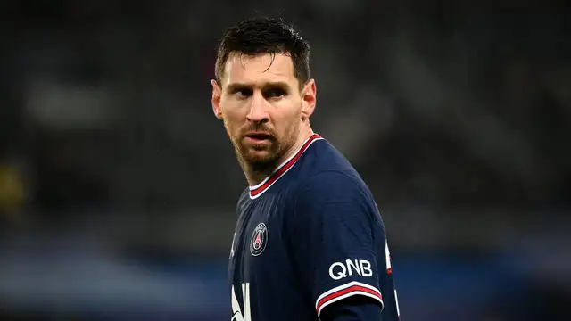

Lionel Messi
Lionel Andrés Messi Cuccittini (Rosario, 24 de junio de 1987), conocido como Leo Messi, es un futbolista argentino que juega como delantero o centrocampista. Desde 2023, integra el plantel del Inter Miami de la MLS canadoestadounidense. Es también internacional con la selección de Argentina, de la que es capitán. Con el Fútbol Club Barcelona, al que estuvo ligado más de veinte años, ganó 35 títulos, entre ellos, diez de La Liga, cuatro de la Liga de Campeones de la UEFA y siete de la Copa del Rey. Considerado con frecuencia el mejor jugador del mundo y uno de los mejores de todos los tiempos,10 es el único en la historia que ha ganado, entre otras distinciones, ocho veces el Balón de Oro, ocho premios de la FIFA al mejor jugador del mundo, seis Botas de Oro y dos Balones de Oro de la Copa Mundial de Fútbol. En 2020, se convirtió en el primer futbolista y el primer argentino en recibir un premio Laureus y fue incluido en el Dream Team del Balón de Oro. Tiene, entre otros, los récords por más goles en una temporada,11 en un mismo club y en un año calendario. Es, además, el máximo goleador histórico del Barcelona y de la selección argentina, de La Liga, la Supercopa de España, la Supercopa de Europa y el jugador no europeo con más goles en la Liga de Campeones de la UEFA. Nacido y criado en la ciudad de Rosario, a los 13 años se radicó en España, donde el Barcelona accedió a pagar el tratamiento de la enfermedad hormonal que le habían diagnosticado de niño. Después de una rápida progresión por la Academia juvenil del Barcelona, hizo su debut oficial con el primer equipo en octubre de 2004, a los diecisiete años. A pesar de ser propenso a lesiones en los inicios de su carrera, ya en 2006 se estableció como jugador fundamental para el club. Su primera temporada ininterrumpida fue la 2008-09, en la que el Barcelona alcanzó el primer triplete del fútbol español. Por su estilo de juego de pequeño driblador zurdo,12 pronto se lo comparó con su compatriota Diego Maradona quien, en 2007, lo declaró su «sucesor». En 2009, a los veintidós años, ganó su primer Balón de Oro y el premio al Jugador Mundial de la FIFA del año. Siguieron tres temporadas exitosas, en las que ganó cuatro Balones de Oro de forma consecutiva, hecho que no tenía precedentes. Hasta el momento, su mejor campaña personal fue en 2011-12, cuando estableció el récord de más goles en una temporada, tanto en La Liga como en otras competiciones europeas. Durante las dos siguientes temporadas, también sufrió lesiones y, en 2014, perdió el Balón de Oro frente a Cristiano Ronaldo, a quien se considera su rival. Recuperó su mejor forma durante la campaña 2014-15, en la que superó los registros de máximo goleador absoluto en La Liga y la Liga de Campeones y logró con el Barcelona un histórico segundo triplete, además de ganar su quinto Balón de Oro. Volvería a ganarlo en 2019, 2021 y 2023. Como internacional argentino, ha representado a su país en catorce torneos mayores. A nivel juvenil, en 2005 participó con la selección sub-20 en el Sudamericano de Colombia y ganó la Copa Mundial de Países Bajos, torneo en el que finalizó como mejor jugador y máximo goleador y, con la sub-23, recibió la medalla de oro en los Juegos Olímpicos de 2008. Después de debutar en la selección mayor en agosto de 2005, en el Mundial de Alemania 2006 se convirtió en el argentino más joven en jugar y en marcar en un mundial. Al año siguiente, en la Copa América, fue nombrado mejor jugador joven del torneo. Como capitán desde agosto de 2011, llegó con su equipo a las finales del Mundial de Brasil 2014, de la Copa América 2015 y de la Copa América Centenario, además de ganar la Copa América 2021 ante Brasil en el Maracaná, la Finalissima frente a Italia en Wembley y el Mundial de Catar contra Francia en el estadio Lusail en 2022 y la Copa América 2024 a Colombia.